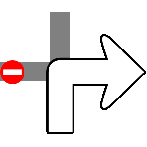
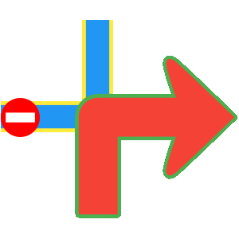

Routes¶
A route represents a navigable path between two or more landmarks (waypoints), including distance, estimated time, and navigation instructions.
Compute routes in different ways:
- Waypoint-based - Based on 2 or more landmarks (navigable)
- Over-track - Based on a predefined path from GPX files or other sources (navigable)
- Route ranges - Not navigable, without segments or instructions
Navigable routes consist of segments. Each segment represents the portion between consecutive waypoints with its own route instructions.
Create Routes¶
Routes cannot be instantiated directly. Compute them based on a list of landmarks. See Get started with Routing for details.
🚨 Alert: Calculating a route does not automatically display it on the map. See Display routes for instructions.
Route Types¶
The SDK supports multiple route types, each tailored for specific use cases:
- Normal routes - Standard routes for typical navigation
- Public transport (PT) routes - Routes using public transport with frequency, ticket info, and transit-specific data
- Over-track (OT) routes - Routes based on predefined paths from GPX files or drawn routes
- Electric vehicle (EV) routes - Routes for EVs with charging station information (not fully implemented)
Route Classes¶
Each route type has specific classes:
| Route Type | Route Class | Segment Class | Instruction Class |
|---|---|---|---|
| Normal Route | Route |
RouteSegment |
RouteInstruction |
| Public Transport Route | PTRoute |
PTRouteSegment |
PTRouteInstruction |
| Over-Track Route | OTRoute |
Not Available | Not Available |
| Electric Vehicle Route | EVRoute |
EVRouteSegment |
EVRouteInstruction |
These classes extend base classes (RouteBase, RouteSegmentBase, RouteInstructionBase) that provide common features.
Route Structure¶
Key route characteristics:
| Field | Type | Explanation |
|---|---|---|
geographicArea |
GeographicArea |
Geographic boundary or region covered by the route. |
polygonGeographicArea |
PolygonGeographicArea |
Polygon representing the geographic area as a series of connected points. |
tilesGeographicArea |
TilesCollectionGeographicArea |
Collection of map tiles representing the geographic area. |
dominantRoads |
List<String> |
List of road names or identifiers that dominate the route. |
hasFerryConnections |
bool |
Indicates whether the route includes ferry connections. |
hasTollRoads |
bool |
Indicates whether the route includes toll roads. |
tollSections |
List<TollSection> |
List of toll sections along the route. |
incursCosts |
bool |
Specifies whether the route incurs monetary costs such as tolls or fees (deprecated; same as hasTollRoads). |
routeStatus |
RouteStatus |
Indicates the current route state. When navigating, deviations may trigger route recalculation; the status can reflect successful computation, lack of internet connection, or recomputation errors. |
terrainProfile |
List<double> |
Terrain elevation profile along the route, represented as a list of elevation values. |
segments |
List<RouteSegment> |
Collection of route segments representing portions of the route. Segments are split based on the initial waypoints used to compute the route. For public transport routes, a segment represents either a pedestrian or a transit portion. |
trafficEvents |
List<RouteTrafficEvent> |
List of traffic events affecting the route, such as delays or road closures. |
RouteSegment Structure¶
A route segment represents the portion between two consecutive waypoints. For public transport routes, segments are categorized as pedestrian or public transit sections.
| Field / Method | Return Type | Description |
|---|---|---|
waypoints |
List<Landmark> |
Returns the list of landmarks representing the start and end waypoints of the route segment. |
timeDistance |
TimeDistance |
Provides the segment length in meters and the estimated travel time in seconds. |
geographicArea |
RectangleGeographicArea |
Returns the smallest rectangle enclosing the geographic area of the route segment. |
incursCosts |
bool |
Indicates whether traveling this route segment incurs a cost to the user. |
summary |
String |
Provides a summary of the route segment. |
instructions |
List<RouteInstruction> |
Returns the list of route instructions for the segment. |
isCommon |
bool |
Indicates whether the segment shares the same travel mode as the parent route. Mainly used for public transport routes. |
tollSections |
List<TollSection> |
List of toll sections along the route segment. |
RouteInstruction Structure¶
Route instructions provide detailed navigation guidance, including coordinates, turn directions, distances, and time to waypoints.
| Method | Return Type | Description |
|---|---|---|
coordinates |
Coordinates |
Gets the coordinates for this route instruction. |
countryCodeISO |
String |
Gets the ISO 3166-1 alpha-3 country code for the navigation instruction. |
exitDetails |
String |
Gets the exit route instruction text. |
followRoadInstruction |
String |
Gets the textual description for follow-road information. |
realisticNextTurnImg |
AbstractGeometryImg |
Gets the image for realistic turn information. |
remainingTravelTimeDistance |
TimeDistance |
Gets the remaining travel time and distance until the destination. |
remainingTravelTimeDistanceToNextWaypoint |
TimeDistance |
Gets the remaining travel time and distance to the next waypoint. |
roadInfo |
List<RoadInfo> |
Gets road information. |
roadInfoImg |
RoadInfoImg |
Gets the road information image. |
signpostDetails |
SignpostDetails |
Gets extended signpost details. |
signpostInstruction |
String |
Gets the textual description for signpost information. |
timeDistanceToNextTurn |
TimeDistance |
Gets the distance and time to the next turn. |
traveledTimeDistance |
TimeDistance |
Gets the traveled time and distance. |
turnDetails |
TurnDetails |
Gets full details for the turn. |
turnImg |
Img |
Gets the image for the turn. |
turnInstruction |
String |
Gets the textual description for the turn. |
hasFollowRoadInfo |
bool |
Checks whether follow-road information is available. |
hasSignpostInfo |
bool |
Checks whether signpost information is available. |
hasTurnInfo |
bool |
Checks whether turn information is available. |
hasRoadInfo |
bool |
Checks whether road information is available. |
isCommon |
bool |
Indicates whether this instruction shares the same transport mode as the parent route. |
isExit |
bool |
Checks whether this instruction represents a main road exit. |
isFerry |
bool |
Checks whether this instruction is on a ferry segment. |
isTollRoad |
bool |
Checks whether this instruction is on a toll road. |
📝 Note: Distinguish between
NavigationInstructionandRouteInstruction:
NavigationInstruction- Real-time, turn-by-turn navigation based on current position (only during navigation or simulation)RouteInstruction- Route overview available immediately after calculation (instructions don't change during navigation)
Related Classes¶
TimeDistance¶
The TimeDistance class provides time and distance details to important points of interest.
It differentiates between road types:
- Restricted - Non-public roads
- Unrestricted - Publicly accessible roads
| Field | Type | Explanation |
|---|---|---|
unrestrictedTimeS |
int |
Unrestricted time in seconds. |
restrictedTimeS |
int |
Restricted time in seconds. |
unrestrictedDistanceM |
int |
Unrestricted distance in meters. |
restrictedDistanceM |
int |
Restricted distance in meters. |
ndBeginEndRatio |
double |
Ratio representing how restricted time and distance are divided between the beginning and the end. |
totalTimeS |
int |
Total time in seconds (sum of unrestricted and restricted times). |
totalDistanceM |
int |
Total distance in meters (sum of unrestricted and restricted distances). |
isEmpty |
bool |
Indicates whether the total time is zero. |
isNotEmpty |
bool |
Indicates whether the total time is non-zero. |
hasRestrictedBeginEndDifferentiation |
bool |
Indicates whether restricted values are differentiated between the beginning and the end based on the ratio. |
restrictedTimeAtBegin |
int |
Restricted time allocated to the beginning, based on the ratio. |
restrictedTimeAtEnd |
int |
Restricted time allocated to the end, based on the ratio. |
restrictedDistanceAtBegin |
int |
Restricted distance allocated to the beginning, based on the ratio. |
restrictedDistanceAtEnd |
int |
Restricted distance allocated to the end, based on the ratio. |
Signpost Details¶
Signposts near roadways indicate intersections and directions. The SDK provides realistic image renderings with additional information.
The SignpostDetails class provides:
| Member | Type | Description |
|--------|------|-------------|
| backgroundColor | Color | Returns the background color of the signpost. |
| borderColor | Color | Returns the border color of the signpost. |
| textColor | Color | Returns the text color of the signpost. |
| hasBackgroundColor | bool | Indicates whether the signpost has a background color. |
| hasBorderColor | bool | Indicates whether the signpost has a border color. |
| hasTextColor | bool | Indicates whether the signpost has a text color. |
| items | List<SignpostItem> | Returns the list of SignpostItem elements associated with the signpost. |
Each SignpostItem provides:
| Member | Type | Description |
|---|---|---|
row |
int |
Returns the one-based row of the item. A value of 0 indicates not applicable. |
column |
int |
Returns the one-based column of the item. A value of 0 indicates not applicable. |
connectionInfo |
SignpostConnectionInfo |
Returns the connection type of the item (branch, towards, exit, invalid). |
phoneme |
String |
Returns the phoneme assigned to the item, if available; otherwise an empty string. |
pictogramType |
SignpostPictogramType |
Returns the pictogram type for the item (e.g. airport, busStation, parkingFacility). |
shieldType |
RoadShieldType |
Returns the shield type for the item (e.g. county, state, federal, interstate). |
text |
String |
Returns the text assigned to the item, if available. |
type |
SignpostItemType |
Returns the type of the item (e.g. placeName, routeNumber, routeName). |
hasAmbiguity |
bool |
Indicates whether the item has ambiguity. Avoid using such items for TTS. |
hasSameShieldLevel |
bool |
Indicates whether the road code item has the same shield level as its associated road. |
Turn Details¶
The TurnDetails class provides:
- event - Turn type enum (straight, right, left, lightLeft, lightRight, sharpRight, sharpLeft, roundaboutExitRight, and more)
- abstractGeometryImg - Abstract turn image (verify validity). Customize colors with
AbstractGeometryImageRenderSettings - roundaboutExitNumber - Roundabout exit number (if available)
Abstract Image vs. Turn Image
Compare images from abstractGeometryImg (left) and turnImg (right):

- abstractGeometryImg - Detailed intersection representation with customizable colors for theme alignment
- turnImg - Simplified turn schematic focusing on essential direction (no customization
💡 Tip: Use the
uidgetter to retrieve each image's unique identifier. Update the UI only when the ID changes to enhance navigation performance.
Customize Abstract Geometry Images
Use AbstractGeometryImageRenderSettings to customize render settings and colors:
AbstractGeometryImageRenderSettings customizedRenderSettings = const AbstractGeometryImageRenderSettings(
activeInnerColor: Colors.red,
activeOuterColor: Colors.green,
inactiveInnerColor: Colors.blue,
inactiveOuterColor: Colors.yellow,
);
Toll Sections¶
The TollSection class represents a tolled route portion, defining start and end points (in meters from route start), cost, and currency.
| Member | Type | Description |
|--------|------|-------------|
| startDistanceM | int | Distance in meters where the section starts, measured from the route starting point. |
| endDistanceM | int | Distance in meters where the section ends, measured from the route starting point. |
| cost | double | Cost associated with the section in the specified currency. |
| currency | String | Currency code (e.g. EUR, USD). |
When cost data is unavailable, cost is 0 and currency is an empty string.
💡 Tip: Get WGS coordinates of toll section start and end using
Route.getCoordinateOnRoutewithstartDistanceMandendDistanceMvalues.
Change Instruction Language¶
Route instruction texts follow the SDK language settings. See Internationalization for details.